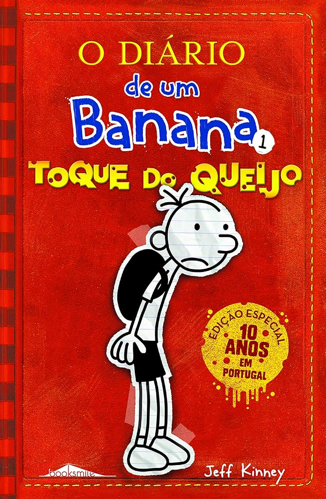

Sobre o Dia do Livro
O Dia do Livro é uma data celebrada em todo o mundo para promover a leitura e a cultura.
É uma ocasião especial para explorar mundos imaginários através das páginas dos livros!
Minha Coleção Favorita: Diário de um Banana
Diário de um Banana é uma série de livros escrita por Jeff Kinney,
que conta as hilariantes aventuras de Greg Heffley, um garoto comum tentando sobreviver à adolescência.
